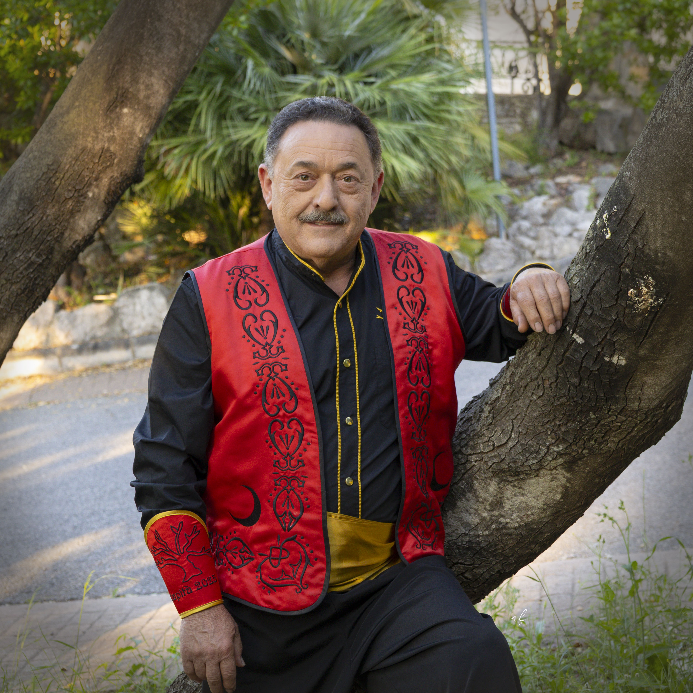

El Nostre Capitá
Poble de Vallada, em dirigisc a tots vosaltres no sols com a Capità de la Comparsa El Roble, sinó com a representant dels Moros i Cristians de Vallada d'aquest any. Una festivitat que ens honra i ens uneix a tots. Una història que celebra els seus 45 anys, la qual ha sigut escrita amb valentia, dignitat, respecte i esperit fester.
Aquests dies ens retrobem amb la música que ens emociona, amb la pólvora que ens aborrona la pell i, sobretot amb els trages i "xilaves". Tots ells, elements distintius d'una festa que ens provoca un sentiment de pertinència difícil d'explicar.
Ser Capità no és un títol, és un compromís, és mantindre viva la flama d'una tradició a fi de que no s'apague i que arrele a les generacions futures la seua grandiositat. Que els nostres carrers siguen testimonis de l'honor amb el qual desfilem, del respecte amb el qual convivim i l'alegria que compartim.
Moltes gràcies a totes les comparses pel suport demostrat durant aquest any, que fica de manifest la germanor que tant identifica als Moros i Cristians.
Agrair a la comparsa El Roble pel recolzament i treball fet durant aquests mesos. Així com a la meua família, que ha sigut la meua guia en cadascun dels passos donats i que sempre ha estat al meu costat amb el seu amor incondicional. Poder transmetre la meua passió pels Moros i Cristians als meus fills i éssers estimats i poder gaudir tots junts, és uns dels sentiments més especials que m'ha aportat aquesta festa.
També cal ficar en valor a totes les empreses i entitats per l'enorme col·laboració i, especialment, a la ciutadania de Vallada pel seu suport i participació, el que em fa sentir orgullós d'aquest gran poble.
Per finalitzar, és moment de desitjar que tots els festers i festeres gaudim d'aquests apassionants dies de música i festa.
Que onege amb fervor la bandera de la mitja lluna!
Visca la comparsa El Roble! I visquen els Moros i Cristians de Vallada!
Bones festes a tots!
Pd: Antes rebentar que sobre.